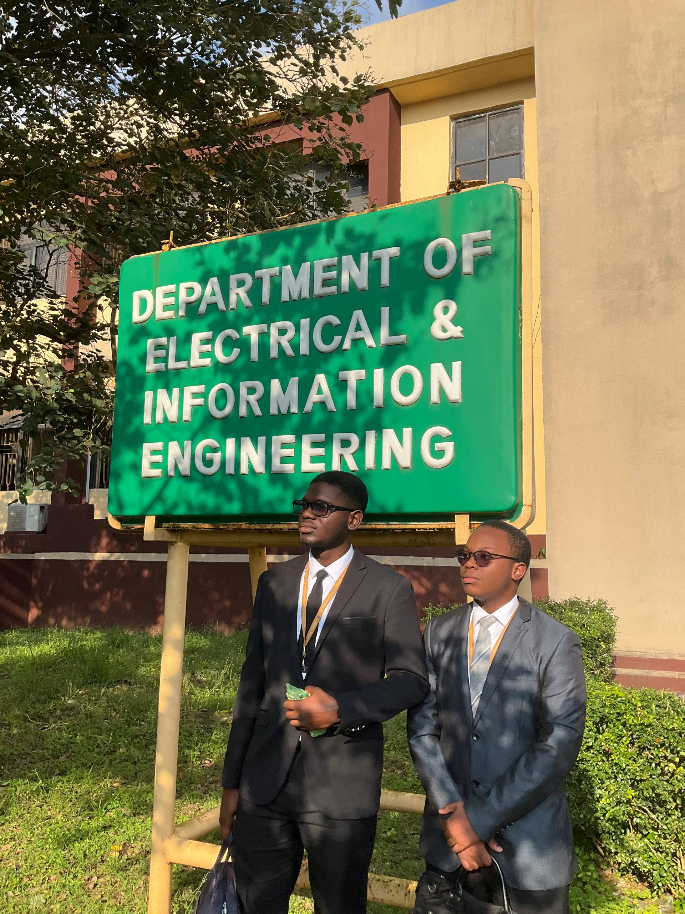

My Portfolio
About Me
My name is Amadi Chinemerem Chizitere I am 19 years old and a 400 Level
Computer Engineering undergraduate at Covenant University.
Education
I attended First Greenwich Primary School at Coker Estate, Ejigbo, Lagos, Nigeria.
I spent all of my preliminary Education there from Creche to Nursery and finally to Primary.
For my Secondary Education I attended Apostolic Faith Secondary School or A.F.S.S. for short which was located at Anthony Village, Lagos, Nigeria.
It was a day and boarding school owned by a church. From J.S.S.1 to S.S.S.3 I attended A.F.S.S.
and took the Junior W.A.E.C. , Senior W.A.E.C. and J.A.M.B. exams respectively to allow access to my University of choice
Currently I attend Covenant University as an undergraduate and I am now in 400 Level in
the Electrical and Information Engineering Department studying Computer Engineering for Five Years
Hobbies
- Reading Books
- Listening to music
- Drawing
Gallery
